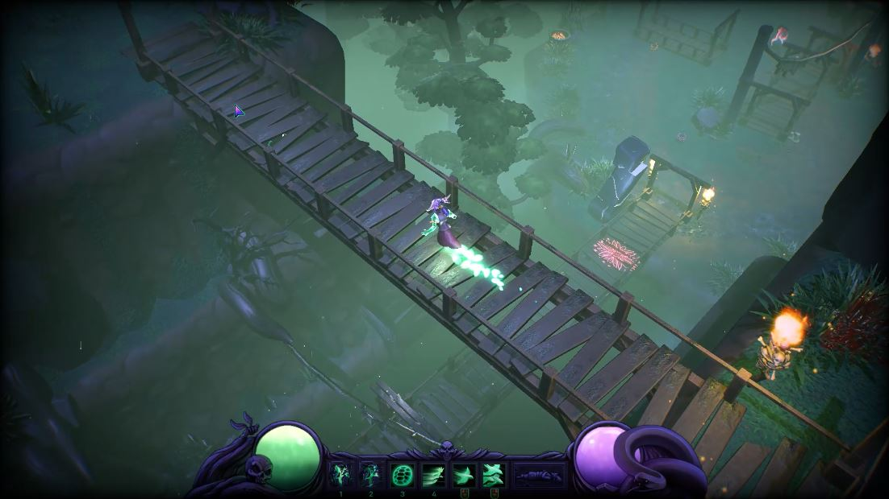

Here is a list of the largest features I implemented that can be found in here:
- Global indirect illumniation with spherical harmonics
- Shadow casting mesh particles
- Shadow atlassing with dynamic and static shadows
- Triple buffered rendering
- GPU driven clustered rendering acceleration structure
- Render pipeline to multiple render views
- Instanced rendering
This engine was written at The Game Assembly. It was written to be useable by other disciplines and for game projects. So there are a lot of things I wish I could have improved. I have put up all the relevant code on Github if you want to have a look =).
Global indirect illumination with spherical harmonics
As an artist I have always enjoyed the lighting part of the art process. So for my last project at The Game Assembly. I wanted to push the real time lighting in my groups Engine to be closer to other real-time game engines. Specifically I wanted to look at Global Illumination and to mimic how it is made for games. This was to push my knowledge of the lighting pipeline more in depth and also to understand more advanced lighting techniques.
How it works
This illumination model builds on using grids of Spherical Harmonics for indirect lighting and Reflection Probes for the specular portion of the lighting model.
When generating the grids spherical harmonics I do a capture of the scene from each grid point. The scene I capture is the level with every light affecting the scene casting shadows. I then use this cubemap to generate a 3rd order spherical harmonic that I save in to a array of spherical harmonic sets. For the reflection probes I instead use the same cubemap approach, but I use the generated cubemap to create a scattering lookup table with a compute shader.
When using the sets to light the scene I collect each grid that affects the pixel most (this is done when filling my cluster structure on the GPU). And then I trilinearly interpolate the influence in the grid with the pixels world position that I sample from the GBuffer. I use the spheircal harmonic contribution as the ambient light factor of the scene, and then I add each light on top of the calculations.
What I would have improved
When lighting the scene that is used for the spherical harmonic cubemap capture, I could have pushed the lighting and add some proper raytracing lighting model that I could have captured. Right now the captured scene is just a capture of how the game looks, so the illumination is not so indirect other than capturing self illuminating objects. Also there is no cubemap or skylight contribution as I did not have time to implement either of those methods.
Shadow casting mesh particles
How it works
The game thread creates particle commands that uses ID's so that the particle manager uses to map the system to a command. Each command will create an emitter instance that references a system. When it comes to updating the emitters I reuse as much data as possible, so it is basically an extension of my isntancing system but over localized clump data.
Each system holds an array of instance data for all the particles. They get calculated at loading time on how many particles each emitter can have as a max. The only difference for my system if it is a mesh or not is a bool that is checked. So when rendering I only need to fetch the correct data from the correct manager depending on if the particle is a mesh or if it is a billboard effect. All this data is serialized inside of the system. So the data the Game thread have to send is tiny to the GPU. It looks like this:
ParticleID particleSystem; //A GUID
v3f offset;
bool isPlaying = true;
bool shouldSpawn = true;
What I would have improved
If I did have the time I would have liked to move the simulations to a compute shader or seperate out all the updating of the systems to their own threads on the CPU.
Shadow atlassing with dynamic and static shadows
How it works
For all the shadows in the two last games my group made at The Game Assembly I wrote this shadow atlassing system. It uses one 8192x8192 shadow atlas. The top half is for all the dynamic lights, and the bottom part is for all the static lights.
On the CPU I check for each shadow casting dynamic lights if they contribute to lighting anything in the frustum. If they do I render a shadow-map for them. For the static lights I instead when the level is loaded, I render each static light and put them in to this atlas with a book keeping system. This system will calculate the optimal size for each light and how much they will contribute to the final scene.
The benefit of using a shadow atlas is that to be able to render a shadow on the GPU I do not need so much information. The only information I need for a light is, the size of the light (in the atlas), and its top left x and y coordinate. And all this can be packed in to one uint32. This makes it very easy to book-keep the shadow map on the GPU and match a light to its shadows.
Triple buffered rendering
Why triple buffered over double buffering
The benefit of going with the apporoach of having three buffers instead of two is that you can set the non rendering logic to be in a locked frame rate. Why you would want that is that compared to an ordinary double buffered approach is that the game thread never have to wait for the rendering to sync with the game thread. Also you can put other systems to be updated at different update frequencies, for example you can have a physics simulation at the same framereate as the game of 60FPS but the network can be updated only at 30FPS and a resource thread that runs at 10FPS.
TLDR, triple buffering offers you more control of when to synchronize, it also unlocks the rendering from being dependent on the game thread in any way.
Clustered rendering
Cluster depth spans visualized.What is clustered rendering?
Clustered Rendering is a form of acceleration structure that is meant to make look up of screen resources faster and easier in runtime. What it does is that you divide the rendering cameras frustum up in cells (called clusters), then you check all the resources you want in the cluster against each cluster and fill up the data structure.
So the benefit of using a clustered acceleration structure is that it is much cheaper to light the scene compared to iterate over all the lights for each pixel.
How I use the cluster
What I chose to do for the data structure is that each cluster corresponds to one 3D texture of RGBA16bit int, and one 2D texture that is only a R16bit int. The 3D texture tells me how many of each element I have in each cluster, and the data looks like this:
R is Point Light Count
G is Spot Light Count
B is Reflection Probe Count
A is Light Probe Grid Count
The second texture is a 2 dimensional array with all the indices of the scene elements in the 3D texture. When I fill the cluster I dispatch a compute-shader per cluster to do all the collision checks on the GPU.
When rendering all I need to do is to figure out which cluster the pixel belongs to. To do this I calculate the slice from the depth and the X , Y coordinates from the pixels screen coordinate, and then with the zDepth I can reconstruct which zSlice the corresponding pixel belongs too. Once I have the cluster data I need to To access the correct X index in my Index texture, this I get by I flattening the 3D coordinate of the cluster and mapping it to my index texture.
Rendering the world from many cameras
The pipeline for several rendering targets
Each unique render view is set up with a command that is controlled from the game thread. This command it contains a Camera, a Texture to Render to, Intermediate Textures associated with the target, as well as a resolution and which render passes to render for the render target.
The main render pipeline does this work each frame:
- Interpolate the read and last read buffers
- Cull the targets that are going to be rendered
- Render shadows and update lights
- Update particles on a different thread
- Render secondary targets
- Render primary render target
A secondary render target after the main one is only rendered if it is being used by anything in the main render pipeline view.
What a secondary render target view does is this:
- Pre frame cleanup
- Sort render buffer for target camera
- Fill Cluster of camera
- Deferred render pass
- Forward render pass
- Post processing pass
- UI pass
Instanced rendering
 Example of many assets being rendered with instancing.How it works
- If a model gets loaded all the models get sorted based on size and gets assigned an ID
- The game thread fills the render buffer with models through their ID’s and the per instance data
- If a model is not unique it is added to a indexed list matching the ID count, if not it is just added as a non instanced render command
- The renderer sorts the models based on the material type
- Cull each instanced list
- Submit the culled list to the GPU render it in one swoop